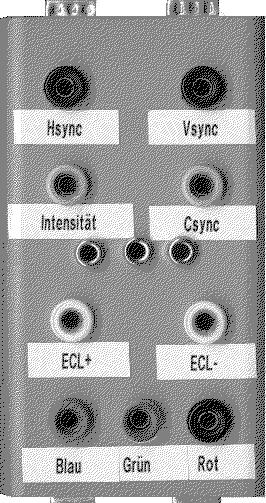

Previous
Next
TOC
Ein Universal Monitoradapter im Selbstbau
Aufgrund wiederholter nicht passender Steckverbinder oder einfach nur
abgerissener Stecker am Anschlußkabel habe ich mir einen Monitoradap-
ter selber gebaut.
Dieser besteht lediglich aus jeweils einem 9 und 15 Pin Dsub Stecker
und je einer 9 und 15 Pin Dsub Buchse sowie 9 4mm Steckbuchsen für
den Signalabgriff mit dem Oszilloskop beziehungsweise für die Durch-
gangsmessung bei Kabelkurzschlüssen beziehungsweise gebrochenen
Adern. Alles ist montiert in einem kleinem Plastikgehäuse welches
recht handlich ist und auf der Unterseite über vier rutschfeste
Gummifüße verfügt.
Die Pinbelegung der Anschlußverschaltung ist auf der Seite 1 zu
finden.

Kapitel Verschiedene Monitor Adapter von 15 auf 9 Pol, Seite 3